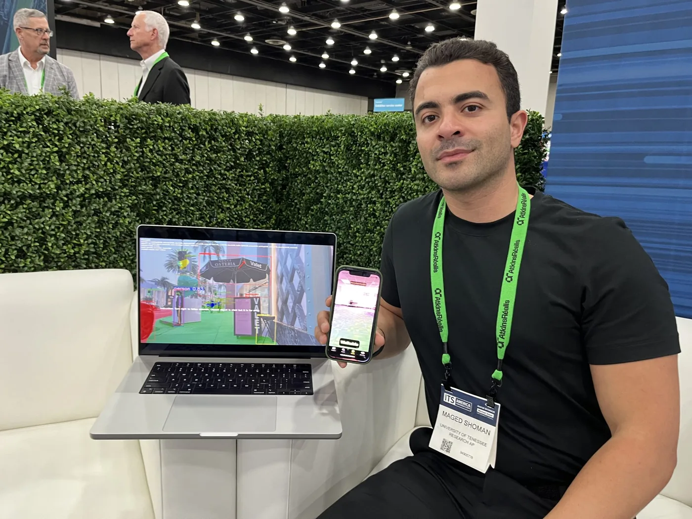

ApexAI
ApexAI develops real-time navigation software that runs on a standard smartphone, requiring no beacons, survey crews, or fixed infrastructure installed in the environment. I founded the company in 2025 and serve as CEO. Two products are in development.
ApexVision
ApexVision addresses outdoor pedestrian navigation for blind and low-vision users. The governing constraint is latency: a scene description delivered two seconds after capture describes a state the user has already left. The system therefore executes its full perception stack on the handset, achieving end-to-end latency from camera frame to audio cue of under 200 milliseconds, with guidance delivered through synthesized speech and haptics. Four transformer models run in sequence, performing semantic segmentation of the walkable surface, monocular depth estimation, object detection and localization, and vision-language scene description. Because inference is entirely local, the system operates without Wi-Fi or cellular service and no imagery is transmitted off the device.

Three operating modes are exposed. Finder localizes a requested object and guides the user to within arm's reach. Safety segments the walkable path and identifies obstacles on it and hazards approaching it. Describe generates a scene description covering layout, people, and signage, and accepts follow-up queries. The application is in free beta on iOS, with Android support planned.


Whereabout
Whereabout addresses indoor navigation. A single iPhone scan produces a measured floor plan and a labeled 3D model, with object extent, height, and position captured by LiDAR. Queries are issued by voice and resolved to a pin on the floor plan with a routed path to the target. The Spaces edition maps venues and events one floor at a time and supports partial rescanning when a layout changes. The Rooms edition maps domestic interiors, cataloguing the contents of drawers and cabinets, with a tactile description read aloud on arrival to confirm the item.


Patent applications covering the navigation architecture are pending in the United States (19/760,891) and Canada (3,319,882).